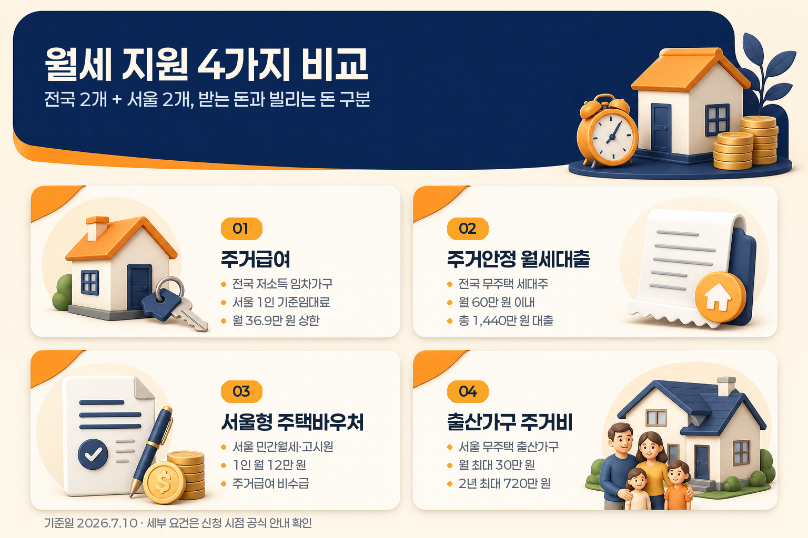

내 소득별 월세 지원 4가지: 주거급여·월세대출·서울형 바우처 비교
월세 부담을 줄이는 제도는 한 가지가 아닙니다. 2026년 7월 10일 기준으로 전국에서 먼저 볼 수 있는 제도는 주거급여와 주거안정월세대출이고, 서울 거주자라면 서울형 주택바우처와 자녀출산 무주택가구 주거비 지원까지 함께 확인해 볼 수 있습니다.
핵심은 돈의 성격을 먼저 나누는 것입니다. 주거급여, 서울형 주택바우처, 자녀출산 무주택가구 주거비 지원은 일정 요건을 충족하면 주거비를 보조받는 제도에 가깝고, 주거안정월세대출은 나중에 갚아야 하는 대출입니다. 또 제도마다 소득을 보는 방식이 달라서 단순 월급만으로 바로 비교하기 어렵습니다.
기준일: 2026년 7월 10일
한눈에 보는 월세 지원 4가지
| 제도 | 지역 | 돈의 성격 | 먼저 볼 기준 | 금액·한도 | 신청 경로 |
|---|---|---|---|---|---|
| 주거급여 | 전국 | 임차급여 지원 | 소득인정액, 가구원 수, 임차료 | 서울 1인 기준임대료 월 36만9천 원 상한 | 복지로, 행정복지센터 |
| 주거안정월세대출 | 전국 | 대출 | 무주택 세대주, 소득, 순자산, 주택 조건 | 월 60만 원 이내, 총 1,440만 원 이내 | 기금e든든, 취급 은행 |
| 서울형 주택바우처 | 서울 | 임대료 보조 | 주거급여 비수급, 소득평가액, 재산, 보증금 | 1인 월 12만 원, 2인 월 13만 원, 3인 월 14만 원 | 주소지 동주민센터 |
| 자녀출산 무주택가구 주거비 지원 | 서울 | 주거비 지원 | 출산·입양, 무주택, 중위소득 180% 이하, 주택 요건 | 월 최대 30만 원, 2년 최대 720만 원 | 탄생육아 몽땅정보통 |

이 표에서 가장 중요한 구분은 두 가지입니다. 하나는 전국 제도인지 서울 제도인지, 다른 하나는 받는 돈인지 빌리는 돈인지입니다. 같은 월세 부담 완화 제도처럼 보여도 신청 자격과 중복 제한이 다르기 때문에, 아래 순서대로 보는 편이 헷갈림을 줄입니다.
1. 주거급여: 소득인정액이 낮은 임차가구가 먼저 보는 전국 제도
주거급여는 월세로 사는 저소득 임차가구가 먼저 확인할 수 있는 대표적인 전국 제도입니다. 나이 자체가 핵심 조건인 제도는 아니고, 가구의 소득인정액과 임차료, 가구원 수, 지역별 기준임대료 등을 함께 봅니다.
복지로 주거급여 안내 기준으로 2026년 1인 가구 선정기준은 소득인정액 월 1,230,834원입니다. 여기서 말하는 소득인정액은 단순 월급이 아니라 소득평가액과 재산의 소득환산액 등을 반영한 값입니다.
임차가구는 지역과 가구원 수에 따라 정해진 기준임대료를 상한으로 실제 임차료를 지원받는 구조입니다. 2026년 기준 1인 가구의 기준임대료는 1급지인 서울이 월 369,000원으로 안내되어 있습니다.
| 확인 항목 | 2026년 공식 안내 기준 |
|---|---|
| 1인 선정기준 | 소득인정액 월 1,230,834원 |
| 1인 서울 기준임대료 | 월 369,000원 |
| 신청 | 복지로 온라인 신청 또는 읍·면·동 행정복지센터 |
| 주의 | 기준임대료는 상한이며 실제 지급액은 임차료와 소득인정액 등에 따라 달라질 수 있음 |
따라서 “서울 1인 월 36만9천 원”은 모든 1인 월세가구가 그대로 받는 금액이라기보다, 서울 1인 임차가구 기준임대료 상한으로 이해하는 것이 안전합니다.
2. 주거안정월세대출: 지원금이 아니라 갚아야 하는 월세 대출
주거안정월세대출은 이름에 월세가 들어가지만 보조금은 아닙니다. 주택도시기금의 월세 대출 상품으로, 일정 요건을 충족한 무주택 세대주가 월세 자금을 빌리는 구조입니다.
마이홈 주거안정월세대출 안내 기준으로 대출 대상 주택은 임차 전용면적 85㎡ 이하 주택입니다. 수도권을 제외한 도시지역이 아닌 읍·면 지역은 100㎡ 이하가 적용될 수 있고, 주거용 오피스텔은 85㎡ 이하가 포함됩니다. 임차보증금은 1억 원 이하, 월세는 60만 원 이하 조건을 봅니다.
소득 기준은 일반형과 우대형이 나뉩니다. 일반형은 부부 합산 연소득 5천만 원 이하 중 우대형에 해당하지 않는 사람으로 안내되어 있고, 공통으로 부부 합산 순자산가액 3.45억 원 이하 조건이 붙습니다.
| 확인 항목 | 공식 안내 기준 |
|---|---|
| 주택 조건 | 전용 85㎡ 이하, 보증금 1억 원 이하, 월세 60만 원 이하 |
| 세대 조건 | 민법상 성년인 무주택 세대주 등 |
| 소득·자산 | 일반형 부부 합산 연소득 5천만 원 이하, 순자산 3.45억 원 이하 |
| 대출 한도 | 총 1,440만 원 이내, 월 60만 원 이내 |
| 신청 | 기금e든든 또는 취급 은행 |
이 제도는 매달 나가는 월세 현금흐름을 버티는 데 쓰는 대출 성격입니다. 글을 읽을 때도 “지원받는 돈”과 같은 줄에 놓기보다, 금리와 상환, 대출 가능 여부를 따로 확인하는 항목으로 보는 편이 좋습니다.
3. 서울형 주택바우처: 서울의 주거급여 비수급 가구가 보는 임대료 보조
서울형 주택바우처는 서울에 거주하면서 민간 월세 주택이나 고시원에 사는 저소득 가구를 위한 임대료 보조 제도입니다. 주거급여를 받지 않는 가구가 전제라는 점이 중요합니다.
서울주거포털 일반바우처 안내 기준으로 지원대상은 민간 월세 주택 및 고시원 거주 가구 중 일정 기준을 모두 만족하는 가구입니다. 2026년 중위소득 60% 표에서 1인 가구 소득평가액 기준은 월 1,538,543원으로 안내되어 있습니다. 임대보증금은 1억6천5백만 원 이하, 재산가액은 2억 원 이하 요건도 함께 봅니다.
지원금액은 가구원 수에 따라 다릅니다.
| 가구원 수 | 지원금액 |
|---|---|
| 1인 | 월 120,000원 |
| 2인 | 월 130,000원 |
| 3인 | 월 140,000원 |
| 4인 | 월 150,000원 |
| 5인 | 월 160,000원 |
| 6인 | 월 170,000원 |
다만 서울형 주택바우처에는 제외 조건이 있습니다. 기초생활수급가구 중 생계급여, 의료급여, 주거급여 수급가구는 제외될 수 있고, 공공임대주택 거주가구, 금융재산 8천만 원 초과, 자동차 2대 이상 보유 등도 제한 사유로 안내됩니다.
즉 서울형 주택바우처는 “서울에 살고 월세를 낸다”만으로 판단하기보다, 주거급여 수급 여부와 민간 월세·고시원 거주 여부, 소득평가액, 재산, 보증금을 함께 보는 제도입니다.
4. 자녀출산 무주택가구 주거비 지원: 서울 출산가구가 보는 별도 제도
서울의 자녀출산 무주택가구 주거비 지원은 출산 또는 입양 가구의 주거비 부담을 낮추기 위한 서울시 제도입니다. 탄생육아 몽땅정보통 안내 기준으로 월 최대 30만 원, 2년간 최대 720만 원의 주거비를 지원합니다. 2026년 하반기 신청기한은 2026년 7월 1일부터 2026년 12월 31일까지로 안내되어 있습니다.
서울시 보도자료와 사업 안내를 함께 보면 기본 방향은 분명합니다. 서울시에 거주하는 무주택 출산 또는 입양 가구가 대상이고, 신청일 기준 신청자와 자녀가 서울시에 거주하며 동일 주소지에 있어야 합니다. 자녀의 서울시 출생신고도 요건으로 안내됩니다.
소득 기준은 기준 중위소득 180% 이하입니다. 3인 가구로 보면 월 약 965만 원대 수준으로 계산됩니다. 다만 이 제도는 소득만 보는 것이 아니라 무주택, 공공임대주택 미거주, 전세보증금 또는 월세 환산 기준, 주택면적 같은 주거요건도 함께 봅니다.
| 확인 항목 | 공식 안내 기준 |
|---|---|
| 지원 내용 | 월 최대 30만 원, 2년간 최대 720만 원 |
| 신청기한 | 2026년 7월 1일~2026년 12월 31일 |
| 기본 요건 | 서울시 거주 무주택 출산·입양 가구의 부 또는 모 |
| 소득 기준 | 기준 중위소득 180% 이하 |
| 주거 요건 | 전세보증금 5억 원 이하 또는 월세 환산액과 월세 합산 229만 원 이하, 전용 85㎡ 이하 등 |
| 중복 주의 | 정부·서울시 주거 관련 지원을 받고 있는 가구는 제외될 수 있음 |
이 제도는 일반적인 월세지원보다 대상이 좁습니다. 하지만 서울에서 출산 후 월세 또는 전세이자를 내고 있는 무주택 가구라면 별도로 확인할 만한 제도입니다.
소득 기준이 제도마다 다르게 보이는 이유
월세 지원 제도를 볼 때 헷갈리는 이유는 “소득”이라는 단어가 같아도 계산 방식이 다르기 때문입니다.
| 표현 | 주로 보는 제도 | 의미 |
|---|---|---|
| 소득인정액 | 주거급여 | 소득평가액에 재산의 소득환산액 등을 반영한 값 |
| 부부 합산 연소득 | 주거안정월세대출 | 대출 심사에서 보는 연간 소득 기준 |
| 소득평가액 | 서울형 주택바우처 | 서울형 바우처에서 보는 가구 소득 기준 |
| 기준 중위소득 180% | 자녀출산 무주택가구 주거비 지원 | 가구원 수별 기준 중위소득에 비율을 곱해 보는 기준 |
그래서 월급이 비슷해 보여도 어떤 제도에서는 가능성이 있고, 다른 제도에서는 재산·보증금·주택면적 때문에 달라질 수 있습니다. 처음 볼 때는 금액만 비교하기보다 “이 제도는 어떤 소득 개념을 쓰는가”를 먼저 확인하는 것이 좋습니다.
상황별 확인 순서
처음 확인한다면 아래 순서가 가장 단순합니다.
| 상황 | 먼저 확인할 제도 | 이유 |
|---|---|---|
| 전국 어디서나 월세 부담이 크고 소득인정액이 낮은 가구 | 주거급여 | 전국 제도이고 현금성 임차급여 구조 |
| 보조금 대상은 아니지만 월세 자금 대출이 필요한 무주택 세대주 | 주거안정월세대출 | 월세를 빌리는 제도라 별도 대출 심사 필요 |
| 서울에 살고 주거급여는 받지 않지만 민간 월세·고시원에 거주 | 서울형 주택바우처 | 서울시 임대료 보조 제도 |
| 서울에서 출산·입양 후 주거비를 내는 무주택 가구 | 자녀출산 무주택가구 주거비 지원 | 출산가구에 특화된 서울시 주거비 지원 |
이 순서는 자격 가능성을 확정하는 순서가 아니라, 어떤 공식 페이지부터 봐야 하는지 정하는 길잡이입니다. 실제 신청 가능 여부는 신청 시점의 주민등록, 임대차계약, 소득·재산 조사, 중복지원 여부에 따라 달라질 수 있습니다.
신청 전 체크리스트
- 전국 제도인지 서울시 제도인지 먼저 구분하기
- 받는 돈인지, 나중에 갚는 대출인지 구분하기
- 소득인정액, 소득평가액, 연소득, 기준 중위소득 중 어떤 기준을 쓰는지 확인하기
- 주거급여를 받고 있다면 서울형 주택바우처 등 중복 제한을 먼저 보기
- 월세대출은 보증금 1억 원 이하, 월세 60만 원 이하, 전용면적 조건을 함께 보기
- 서울형 주택바우처는 민간 월세·고시원 거주, 보증금, 재산, 자동차, 금융재산 제한을 같이 보기
- 출산가구 주거비 지원은 신청기한, 동일 주소, 무주택, 공공임대 미거주, 주택요건을 같이 보기
- 신청 전에는 계약서, 월세 납부 증빙, 신분증, 가족관계·주민등록 관련 서류 등 필요한 서류를 공식 안내에서 확인하기
자주 묻는 질문
청년만 받을 수 있는 월세 지원인가요?
아닙니다. 이 글에서 정리한 네 제도는 모두 “청년 전용”으로만 묶인 제도가 아닙니다. 주거급여는 나이보다 소득인정액과 임차 상황을 보고, 주거안정월세대출은 성년 무주택 세대주 요건과 소득·자산·주택 조건을 봅니다. 서울형 주택바우처와 출산가구 주거비 지원도 각각 서울 거주, 주거급여 비수급, 출산·무주택 등 별도 기준을 봅니다.
서울 1인 가구면 주거급여 36만9천 원을 받나요?
36만9천 원은 2026년 서울 1인 가구 기준임대료 상한으로 안내되는 금액입니다. 실제 임차급여는 임차료와 소득인정액 등에 따라 달라질 수 있으므로, 모든 서울 1인 가구가 같은 금액을 받는다고 보면 안 됩니다.
주거안정월세대출도 지원금인가요?
아닙니다. 주거안정월세대출은 월세 자금을 빌리는 제도입니다. 월 60만 원 이내, 총 1,440만 원 이내 한도가 안내되어 있지만 대출이므로 금리, 상환, 기존 대출, 주택도시기금 중복대출 제한 등을 함께 봐야 합니다.
주거급여와 서울형 주택바우처를 같이 받을 수 있나요?
서울형 주택바우처 일반바우처 안내에는 기초생활수급가구 중 생계급여, 의료급여, 주거급여 수급가구가 지원 제외자로 표시되어 있습니다. 이미 주거급여를 받고 있다면 서울형 주택바우처는 중복 가능 여부를 먼저 확인해야 합니다.
서울 밖에 살면 어떤 제도부터 보면 되나요?
서울시 제도인 서울형 주택바우처와 자녀출산 무주택가구 주거비 지원은 서울 거주 요건이 붙습니다. 서울 밖에 거주한다면 전국 제도인 주거급여와 주거안정월세대출을 먼저 보고, 거주 지자체의 별도 주거비 지원이나 월세 지원 사업이 있는지 확인하는 흐름이 좋습니다.
마무리 정리
월세 지원은 하나의 제도가 아니라 여러 기준이 겹친 영역입니다. 전국 제도로는 주거급여와 주거안정월세대출을 먼저 볼 수 있고, 서울 거주자라면 서울형 주택바우처와 자녀출산 무주택가구 주거비 지원을 추가로 확인할 수 있습니다.
정리하면, 소득인정액이 낮은 임차가구는 주거급여, 월세 자금 대출이 필요한 무주택 세대주는 주거안정월세대출, 서울의 민간 월세·고시원 거주 저소득 가구는 서울형 주택바우처, 서울의 출산·입양 무주택 가구는 자녀출산 무주택가구 주거비 지원을 각각 나눠 보면 됩니다.
자료 기준일: 2026년 7월 10일. 이 글은 공개 공식 안내를 바탕으로 한 일반 정보 정리입니다. 실제 대상 여부, 지급액, 대출 가능 여부, 중복지원 제한, 제출서류는 신청 시점의 최신 공식 안내와 개인별 심사 결과에 따라 달라질 수 있습니다.
- 복지로 주거급여: https://www.bokjiro.go.kr/ssis-tbu/twataa/wlfareInfo/moveTWAT52011M.do?wlfareInfoId=WLF00003201
- 마이홈 주거안정월세대출: https://www.myhome.go.kr/hws/portal/cont/selectResidentialMonthlyRentLoanView.do
- 서울주거포털 서울형 주택바우처: https://housing.seoul.go.kr/site/main/content/sh_061010
- 서울시 자녀출산 무주택가구 주거비 지원 보도자료: https://www.seoul.go.kr/news/news_report.do?nttNo=461130&srchCtgry=475
- 탄생육아 몽땅정보통 자녀출산 무주택가구 주거비 지원: https://umppa.seoul.go.kr/hmpg/sprt/bzin/bzmgComtDetail.do?biz_mng_no=197DA8F773AAE8DCE063A6022162FF67